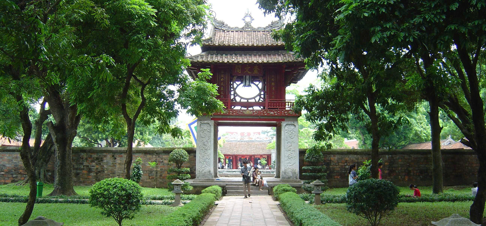
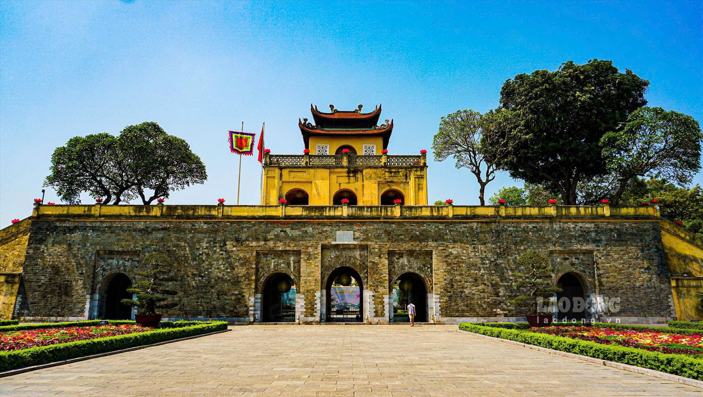
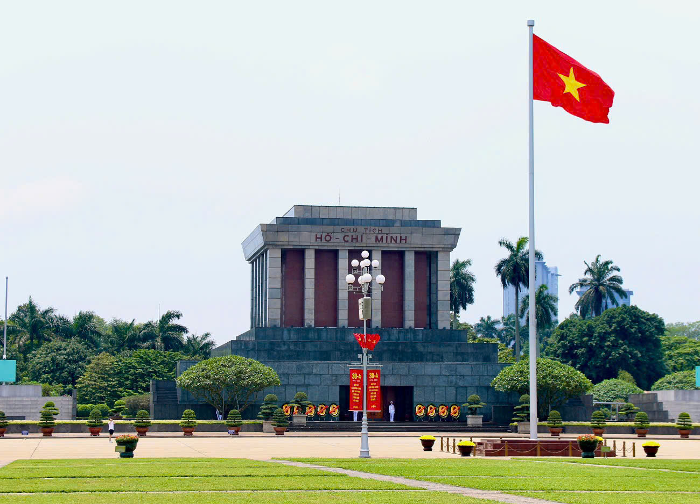
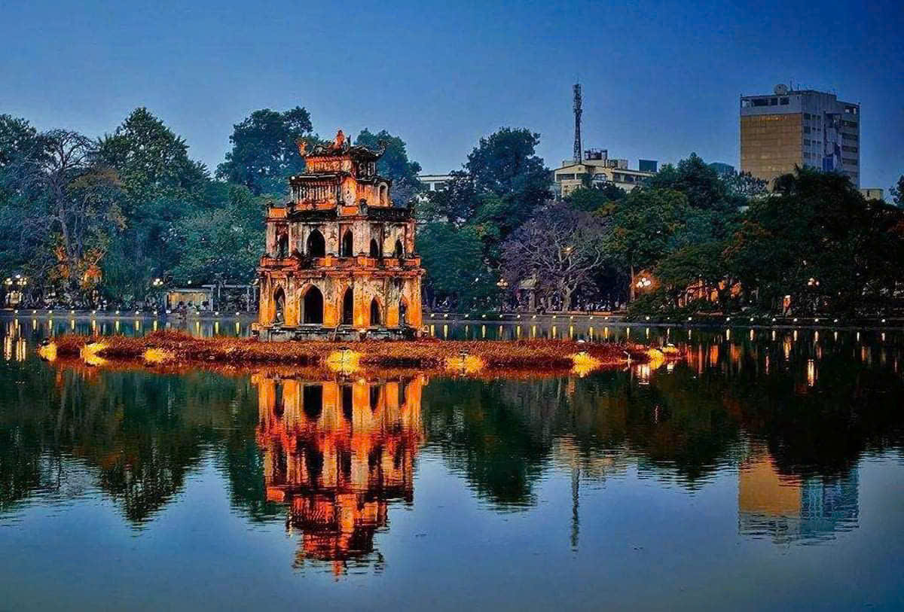

1. Những kiến trúc cổ kính ở Hà Nội
- Văn Miếu – Quốc Tử Giám 
- Hoàng Thành Thăng Long 
- Lăng Chủ Tịch Hồ Chí Minh 
- Hồ Hoàn Kiếm 
- Nhà hát lớn Hà Nội

THỦ ĐÔ CỦA VIỆT NAM
Hà Nội - thủ đô Việt Nam, mỗi khi nghe giới thiệu về Hà Nội, bất cứ ai cũng đều nhớ ngay đến những điều thú vị về văn hóa và con người Thủ đô. Văn hóa Hà Nội rất đa dạng và phong phú, thể hiện qua nghệ thuật truyền thống, âm nhạc, ẩm thực,… nổi tiếng với di sản văn hóa.
1. Những kiến trúc cổ kính ở Hà Nội
2. Một số đền, chùa mang đậm dấu ấn ở Hà Nội
3. Những di sản văn hóa ở vùng đất này


4. Một số tên các con đường thuộc tên các vị anh hùng lịch sử
5. Ẩm thực